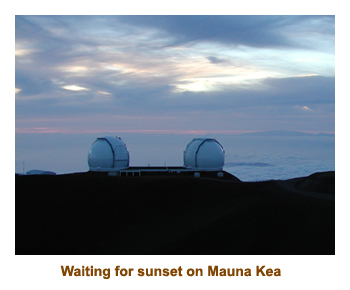
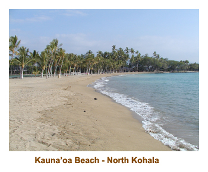

[ Home ] [ Travel ] [ Photography ] [ Pets ] [ Games] [ Rowing] [ Physics ]


A Visit to the Big Island
Travel
Cruises
Past Cruises (Diaries)
Future Cruises
Rogues Galleries
Land Trips
Diaries (Land Trips)
Hawai'i - Big Island - 04'01
Hawai'i - Maui - 05'02
Hawai'i - Big Island - 04'03
Hawai'i - Kaua'i - 09'04
Hawai'i - Big Island - 04'06
Hawai'i - Maui - 04'06
Mainland China - 05'07
Phoenix, Arizona - 12'07
Greek Isles - 05'08
Hawai'i - Kaua'i - 09'08
Hawai'i - Big Island - 09'09
Hawai'i - Maui - 05'12
Hawai'i - Big Island - 04'13
Ireland - 08'13
Mexico - Cancun 11'13
France/Belgium/Lux 07'15
Hawai'i - Big Island - 05'17
England / Wales - 06'17
Hawai'i - Big Island - 09'19
Photography
Cameras
Underwater
Pets
Tara
Blackie
Whitey
Muffy
Ollie
Rusty
Fluffy
Rufus&Dufus
Games
Rowing
Physics
This was a trip for Mike and I. Marjorie didn't have enough holidays to join us. We decided that we wanted to do the Big Island in depth, so booked for 3 nights in Hilo and 4 nights in Kona. That way we could spend lots of time in the Volcano Park and around Hilo without worrying about the long drive to the other side of the island.
We flew down Aloha Airlines on Sunday and had a wonderful flight. The flight was direct to Kona. We arrived early afternoon and picked up our rental card (a red Neon). We then headed out across the northern route to Hilo. Passing through Waimea (Kamuela), we had planned on having lunch at Merriman's, but it was closed on Sundays. Arrrgh! Instead, we ate at the Paniolo Broiler. It was good there.
We arrived in Hilo before dark, so it was easy to find our hotel - the Dolphin Bay Hotel. It was a basic motel in a seedier part of the town, but very nice. The owner, John Alexander, was very friendly and knowledgeable about the volcano. He ended up lending us flashlights for our trip to the lava flow. We headed off to bed, ready for an early start to the volcano for the day.


Today was a beautiful warm day. We were up early and headed off on our 1 hour drive to the volcano park. We did the 1st half of the Crater Rim Drive, stopping often. Then we headed down the Chain of Craters Road towards the ocean. On the way we stopped at the Napau Trailand hiked to the Mauna Ulu lookout and Pu'u Huluhulu. By the time we got back to the car it was lunch time, so we headed back to the little village of Volcano and had lunch at the Lava Rock Cafe. It was good! On the way to the restaurant, we did the second half of the rim drive and stopped to walk through the Thurston lava tubes.


After lunch, we headed back down the Chain of Craters road stopping often. We saw short sections of road that had been obliterated by recent lava flows. We also stopped at Pu'u Loa for a guided hike through the petroglyphs. The glyphs were 6 or 7 hundred years old and very interesting. It's only a matter of time before they are covered up by the lava flows.
We got to the parking area at the end of the road (by the ocean) about 4:30. The lineup of cars must have been a mile or so, so we had to park a long way from the start of the path to the lava flow. The hike was over lava flows and the trail had been marked with yellow reflectors by the park's people. You had to be careful as parts of the laval was broken like sheets of glass and was quite sharp. It was about a mile or so hike over the lava to get to the current flow. It had been a log time since the lava had broken through the surface, and so the flow was actually underground. As we hiked along, you could see red glows through cracks and fissures. It was very hot near the fissures. As darkness came, we could see more and more of the flow lighting up. In fact there were about 20 or 30 of us standing on a large piece of lava, when some said "we're standing right on top of it". Sure enough there were cracks underfoot and you could see the red hot lava below us! The "frozen" lava on top is an amazing insulator - the flowing lava is 2100 C, but the frozen surface above was only warm to the touch. By the time we started back to the car, it was very dark. I'm glad we had the flashlights to see our way.
The next morning we headed up north of Hilo to hike into waterfalls and wander through tropical gardens. We went to the end of the road at Waipio Valley and hiked down the road to the valley. Whoa, was that steep! It was even steeper hiking back up. The waterfalls were amazing. It must have rained recently which made them really impressive. Akaka Falls (the very high one) and Umauma Falls (the tri-layered falls) were especially nice. We also wandered around a tropical garden (World Botanical Gardens). It was very new, so it wasn't completely finished yet. For lunch we stopped in at a pizza restaurant in a small village near Akaka Falls. It was excellent.After lunch we drove to "the tide pools" (south of Hilo) to snorkel. The pools were huge interconnected lava bowls with lots of colourful fish. Once again we used the Snorkel Hawai'i book by Judy and Mel Malinowski as our guide for snorkelling sites. It was very helpful.
The next day we said goodbye to Hilo and drove around the south end of the island to Kona. Along the way we stopped at Punalu'u Black Sand Beach. The sand looks filthy, but leaves your hands clean. It is ground up black lava the size of very fine pebbles. We saw a sleepy turtle on the sand soaking up the rays. At the south end of the road, we stopped at the Punalu'u Bakery where those fantastic guava and taro sweatbreads are made. It is the most southerly bakery in the USA. The bakery was very interesting, not only for the baked goods, but paintings on the walls and a beautiful garden. We arrived in Kona at the Case De Emdeko mid-afternoon.
Over the next couple of days we had a couple of treats booked. First we did a trip up Mauna Kea to see all of the telescopes, and to watch the sunset. Even though it was very warm at sea level, by the time we reached the summit (13,000 feet) it was getting quite cold. We were given parkas as the temperature dropped to almost zero. The sunset was quite spectacular as we huddled near the telescope buildings. On the way down (after dark) we stopped at a site where the guide set up a telescope and showed us some stars and planets.
The next day we had booked a snorkeling excursion from Keahu Bay on the Fairwind II. The boat took us down the coast to Kealakekua Bay. Marj and I had done the same excursion 2 years before and it was terrific. This time the bay was still churned up from a storm earlier in the week and the visibility was quite poor. So, the snorkeling wasn't great, but the boat ride and the BBQ lunch was fine.

One day we travelled up island to the Kohala peninsula and went to the end of the road at Pololu Beach. The north end is quite interesting and is the birthplace of King Kamehameha. On the way back we stopped at a holy site called Pu'ukohola Heiau, built by Kamehameha. We purposely passed through Waimea to have lunch at Merriman's, but this time it was closed for a private function. We just can't win!
On another day we spent some time walking through Pu'uhonua o Honaunau - the City of Refuge. It was very interesting. After visiting the park, we located the snorkelling area across from the site, but decided not to try it as some snorkelers there said it was very murky.
On a couple of days we tried snorkeling at 2 or 3 Kohala beaches. However, the water was very murky and the snorkeling wasn't great. At one beach there was an adjacent hotel and we ended up in their huge hot tub, which was designed like a volcanic crater. Very nice! The best snorkeling that we had was right near our condo at Kahalu'u Beach.
The Casa De Emdeko condo was great. It was a convenient location (far enough from downtown Kona) and inexpensive to rent. There was no beach there, but the waves crashed upon the rocks. There is a sandy area right along the rocks where you can watch the waves. We also manage to make it to Teshima's a couple of times for great Japanese food.

All in all, it was a great trip. We only had a week, so it went very quickly. Next time we'll have to aim for 2 weeks.